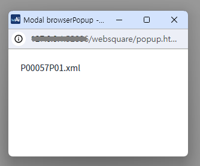
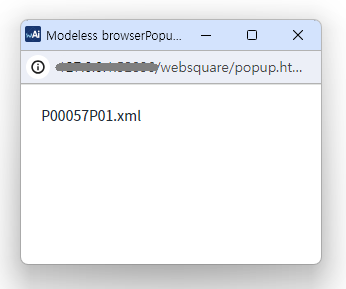
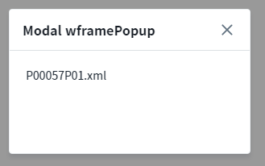
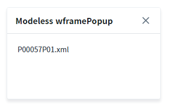
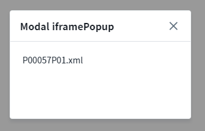
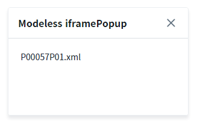

'$p.openPopup' 메소드를 사용하여 생성한 모달 팝업과 모달리스 팝업을 비교할 수 있는 예제입니다.
모달 browserPopup 호출하기
모달리스 browserPopup 호출하기
모달 wframePopup 호출하기
모달리스 wframePopup 호출하기
모달 iframePopup 호출하기
모달리스 iframePopup 호출하기
화면에 버튼을 클릭하여 팝업의 형태를 비교합니다.
1
'browserPopup - modal' 버튼을 클릭합니다.
브라우저의 새 창으로 팝업이 생성됩니다. 팝업을 호출한 화면에 반투명 레이어가 생성됩니다.
Image 1.브라우저(Chrome) 실행 예시

1
'browserPopup - modeless' 버튼을 클릭합니다.
브라우저의 새 창으로 팝업이 생성됩니다. 팝업을 호출한 화면에 레이어가 생성되지 않습니다.
Image 2.브라우저(Chrome) 실행 예시

1
'wframePopup - modal' 버튼을 클릭합니다.
팝업을 호출한 화면에 반투명 레이어가 생성되고, 그 위로 팝업이 생성됩니다.
Image 3.브라우저(Chrome) 실행 예시

1
'wframePopup - modeless' 버튼을 클릭합니다.
팝업을 호출한 화면에 팝업이 생성됩니다.
Image 4.브라우저(Chrome) 실행 예시

1
'iframePopup - modal' 버튼을 클릭합니다.
팝업을 호출한 화면에 반투명 레이어가 생성되고, 그 위로 팝업이 생성됩니다.
팝업의 컨텐츠가 'iframe'에서 호출됩니다.
Image 5.브라우저(Chrome) 실행 예시

1
'iframePopup - modeless' 버튼을 클릭합니다.
팝업을 호출한 화면에 팝업이 생성됩니다.
팝업의 컨텐츠가 'iframe'에서 호출됩니다.
Image 6.브라우저(Chrome) 실행 예시

아래의 두가지 속성값이 따라 팝업의 형태가 변경됩니다.
type : [default : "browserPopup", "iframePopup", "wframePopup"] 팝업의 종류.
modal : [default : "false", "true"] 모달 기능 사용 여부.
아래는 type 속성의 설정 값에 따른 설명입니다.
browserPopup : 독립된 별도의 창으로 생성되는 팝업입니다. 내부적으로 window.open을 통해 생성되는 팝업입니다. 프로세스가 분리되어 완전히 독립적으로 실행됩니다. 부모에 영향 받지 않고 팝업 위치를 자유롭게 움직일 수 있습니다.
iframePopup : iframe으로 생성되는 팝업입니다. 부모 화면에 종속적으로 생성됩니다. wframe 팝업과 출력된 모양은 동일하지만 콘텐츠가 iframe에서 실행됩니다.
wframePopup : wframe으로 생성되는 팝업입니다. 부모 화면에 종속적으로 생성됩니다.
'$p.openPopup' 메소드를 사용하여 스크립트를 작성합니다. 세부 설정은 아래의 스크립트 예시에 작성되어 있습니다.
Example 1.Script
var jsnOptions = { id : "popup_exam1_1", type : "browserPopup", //필수 고정 width: "300px", height: "180px", popupName : "Modal browserPopup", modal : "true" //필수 고정 }; $p.openPopup("/page/P00057P01.xml", jsnOptions );
'$p.openPopup' 메소드를 사용하여 스크립트를 작성합니다. 세부 설정은 아래의 스크립트 예시에 작성되어 있습니다.
Example 2.Script
var jsnOptions = { id : "popup_exam1_2", type : "browserPopup", //필수 고정 width: "300px", height: "180px", popupName : "Modeless browserPopup" }; $p.openPopup("/page/P00057P01.xml", jsnOptions );
'$p.openPopup' 메소드를 사용하여 스크립트를 작성합니다. 세부 설정은 아래의 스크립트 예시에 작성되어 있습니다.
Example 3.Script
var jsnOptions = { id : "popup_exam2_1", type : "wframePopup", //필수 고정 width: "300px", height: "180px", popupName : "Modal wframePopup", modal : "true" //필수 고정 }; $p.openPopup("/page/P00057P01.xml", jsnOptions );
'$p.openPopup' 메소드를 사용하여 스크립트를 작성합니다. 세부 설정은 아래의 스크립트 예시에 작성되어 있습니다.
Example 4.Script
var jsnOptions = { id : "popup_exam2_2", type : "wframePopup", //필수 고정 width: "300px", height: "180px", popupName : "Modeless wframePopup" }; $p.openPopup("/page/P00057P01.xml", jsnOptions );
'$p.openPopup' 메소드를 사용하여 스크립트를 작성합니다. 세부 설정은 아래의 스크립트 예시에 작성되어 있습니다.
Example 5.Script
var jsnOptions = { id : "popup_exam3_1", type : "iframePopup", //필수 고정 width: "300px", height: "180px", popupName : "Modal iframePopup", modal : "true" //필수 고정 }; $p.openPopup("/page/P00057P01.xml", jsnOptions );
'$p.openPopup' 메소드를 사용하여 스크립트를 작성합니다. 세부 설정은 아래의 스크립트 예시에 작성되어 있습니다.
Example 6.Script
var jsnOptions = { id : "popup_exam3_2", type : "iframePopup", //필수 고정 width: "300px", height: "180px", popupName : "Modeless iframePopup" }; $p.openPopup("/page/P00057P01.xml", jsnOptions );
$p.openPopup( url , options , params , target )